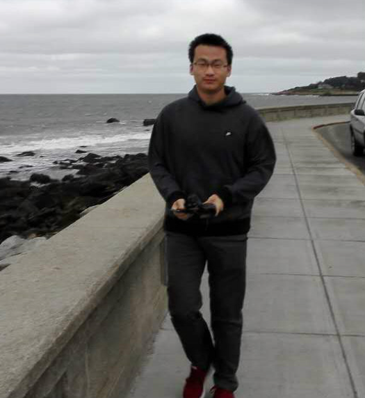

ABOUT

Yihao(Lewis) Feng is a senior undergraduate student at College of Software, Beihang University, China.
My research interests includes Machine Learning and Data mining, especially the fields of Probabilistic Graphical Models and its applications.
This website is designed to show me as a researcher, programmer and passionate Learner.
My research interests includes Machine Learning and Data mining, especially the fields of Probabilistic Graphical Models and its applications.
This website is designed to show me as a researcher, programmer and passionate Learner.
RESEARCH
Carnegie Mellon University, USA
Research Assistant, July. 2015- Sept. 2015ArticuLab, Human-Computer Interaction Institute
Under supervision by Prof. Justine Cassell
Peking University, China
Research Assistant, Oct.2014- presentState Key Laboratory of Machine Perception,
Under Supervision by Prof. Guojie Song
University of Tsukuba, Japan
Academic Visiting Student, July.2014Mathematical Modeling & Algorithms Laboratory
Under Supervision By Dr. Yasuyuki Maeda
EDUCATION

Beihang University
B.E, Software Engineering, 2012-2016Major GPA 3.85/4, Overall GPA 3.74 /4
Ranking No.4 among 136 students in College of Software.
WORK
Software Engineer, Mobile & Big Data Department
From Feb.2015 to June.2015Zhiquan Inc, China.